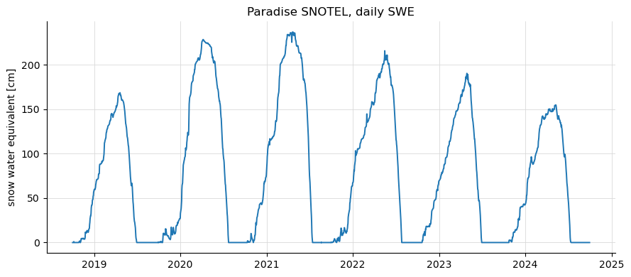
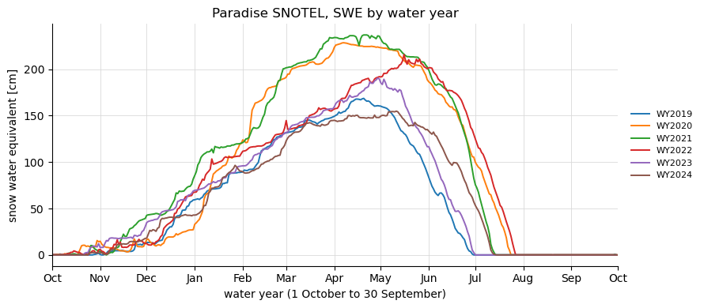
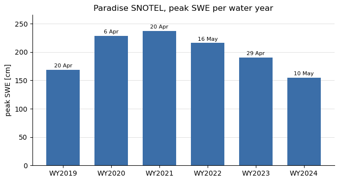

Note
Go to the end to download the full example code.
Water years and day of water year#
A snow season straddles the calendar year, so snow hydrology counts in
water years: in the northern hemisphere WY2024 runs from 1 October 2023 to
30 September 2024 and is named for the year it ends in; in the southern
hemisphere the year starts 1 April and is named for the year it starts.
esd.processing.wateryear holds the vectorised helpers for both conventions,
and every station loader attaches water_year and dowy (day of water
year) coordinates so a series can be grouped, overlaid or aligned by season
without any date arithmetic in user code.
The example takes one SNOTEL station from the credential-free station archive
and shows the same six seasons three ways: on calendar dates, overlaid on one
October-to-September axis with esd.plotting.timeseries(...,
by_water_year=True), and as one peak-SWE bar per water year.
import matplotlib.pyplot as plt
import pandas as pd
import easysnowdata as esd
from easysnowdata.processing import wateryear
print(f"easysnowdata {esd.__version__}")
easysnowdata 0.3.3.dev19+gde94f7b3f
The scalar helpers. water_year names the year, day_of_water_year
counts from 1 on the first day of the season, water_year_start gives
that day, and water_year_range is the season as a daily DatetimeIndex.
WY2024 has 366 days because 29 February 2024 falls inside it.
print("water_year('2024-03-15') ", wateryear.water_year("2024-03-15"))
print("day_of_water_year('2024-03-15') ", wateryear.day_of_water_year("2024-03-15"))
print("day_of_water_year('2023-10-01') ", wateryear.day_of_water_year("2023-10-01"))
print("water_year_start('2024-03-15') ", wateryear.water_year_start("2024-03-15"))
wy2024 = wateryear.water_year_range(2024)
print(
f"water_year_range(2024): {wy2024[0].date()} to {wy2024[-1].date()}, {len(wy2024)} days"
)
water_year('2024-03-15') 2024
day_of_water_year('2024-03-15') 167
day_of_water_year('2023-10-01') 1
water_year_start('2024-03-15') 2023-10-01 00:00:00
water_year_range(2024): 2023-10-01 to 2024-09-30, 366 days
The southern-hemisphere convention: the season starts 1 April, and the year is named for the calendar year it starts in, so 15 March 2024 belongs to WY2023 and is its 350th day.
print(
"southern water_year('2024-03-15') ",
wateryear.water_year("2024-03-15", hemisphere="southern"),
)
print(
"southern day_of_water_year('2024-03-15')",
wateryear.day_of_water_year("2024-03-15", hemisphere="southern"),
)
south = wateryear.water_year_range(2024, hemisphere="southern")
print(f"southern water_year_range(2024): {south[0].date()} to {south[-1].date()}")
southern water_year('2024-03-15') 2023
southern day_of_water_year('2024-03-15') 350
southern water_year_range(2024): 2024-04-01 to 2025-03-31
The same functions accept a DatetimeIndex, a Series or a DataArray and return the same container type, so they vectorise over a whole record.
days = pd.date_range("2023-09-29", "2023-10-02", freq="D")
print(
pd.DataFrame(
{
"water_year": wateryear.water_year(days),
"dowy": wateryear.day_of_water_year(days),
},
index=days,
)
)
water_year dowy
2023-09-29 2023 364
2023-09-30 2023 365
2023-10-01 2024 1
2023-10-02 2024 2
A real series: six seasons of daily SWE at Paradise (SNOTEL 679, Mount
Rainier) from the station archive. The loader has already called
add_water_year_coords, so water_year and dowy ride along the
time dimension; calling it again is harmless and shows what it adds.
obs_ds = esd.stations.archive.load(["679_WA_SNTL"], time="2018-10/2024-09")
obs_ds = wateryear.add_water_year_coords(obs_ds)
swe_da = obs_ds["swe"].sel(station="679_WA_SNTL")
print(
swe_da.coords["water_year"].values[:3],
"...",
swe_da.coords["dowy"].values[:3],
"...",
)
[2019 2019 2019] ... [1 2 3] ...
On calendar dates first: the seasons are easy to count, hard to compare.
ax = esd.plotting.timeseries(swe_da, title=f"{swe_da['name'].item()} SNOTEL, daily SWE")
ax.figure.tight_layout()

Overlaid by water year: each season becomes one line on a shared October-to-September axis, labelled WY2019 to WY2024, so the timing of accumulation and melt-out lines up across years.
ax = esd.plotting.timeseries(
swe_da,
by_water_year=True,
title=f"{swe_da['name'].item()} SNOTEL, SWE by water year",
)
ax.figure.tight_layout()

Because water_year is a plain integer coordinate, groupby works
directly. Peak SWE and the day it was reached, per season.
peak_da = swe_da.groupby("water_year").max()
peak_dowy_da = swe_da.groupby("water_year").map(
lambda season_da: season_da["dowy"][int(season_da.argmax("time"))]
)
peak_date_da = swe_da.groupby("water_year").map(
lambda season_da: season_da["time"][int(season_da.argmax("time"))]
)
summary_df = pd.DataFrame(
{
"peak SWE [cm]": peak_da.values,
"day of water year": peak_dowy_da.values,
"date": pd.DatetimeIndex(peak_date_da.values).date,
},
index=[f"WY{int(y)}" for y in peak_da["water_year"].values],
)
print(summary_df.to_string())
peak SWE [cm] day of water year date
WY2019 168.656006 202 2019-04-20
WY2020 228.600006 189 2020-04-06
WY2021 236.981995 202 2021-04-20
WY2022 215.899994 228 2022-05-16
WY2023 190.500000 211 2023-04-29
WY2024 154.940002 223 2024-05-10
For the yearly maximum alone there is a pandas idiom that needs no helper at
all: an anchored yearly offset. "YS-OCT" is “year start, October”, so
resample(time="YS-OCT") bins from each 1 October to the next 30
September; its labels are the start dates, which is why the coordinate
version reads more naturally as WY2019, WY2020 …
by_offset_da = swe_da.resample(time="YS-OCT").max()
print(by_offset_da.to_series().rename("peak SWE [cm]").to_string())
assert (by_offset_da.values == peak_da.values).all()
time
2018-10-01 168.656006
2019-10-01 228.600006
2020-10-01 236.981995
2021-10-01 215.899994
2022-10-01 190.500000
2023-10-01 154.940002
Freq: YS-OCT
The peaks as bars. A year like WY2022 that peaked late shows up in the table above, not here: bar charts hide timing, which is what the overlay was for.
fig, ax = plt.subplots(figsize=(7, 3.8))
ax.bar(summary_df.index, summary_df["peak SWE [cm]"], color="#3b6ea8", width=0.7)
for label, row in summary_df.iterrows():
ax.annotate(
row["date"].strftime("%-d %b"),
(label, row["peak SWE [cm]"]),
ha="center",
va="bottom",
fontsize=8,
xytext=(0, 2),
textcoords="offset points",
)
ax.set_ylabel("peak SWE [cm]")
ax.set_ylim(0, summary_df["peak SWE [cm]"].max() * 1.12)
ax.set_title(f"{swe_da['name'].item()} SNOTEL, peak SWE per water year")
ax.grid(True, axis="y", color="0.85", linewidth=0.6)
ax.set_axisbelow(True)
for side in ("top", "right"):
ax.spines[side].set_visible(False)
fig.tight_layout()
